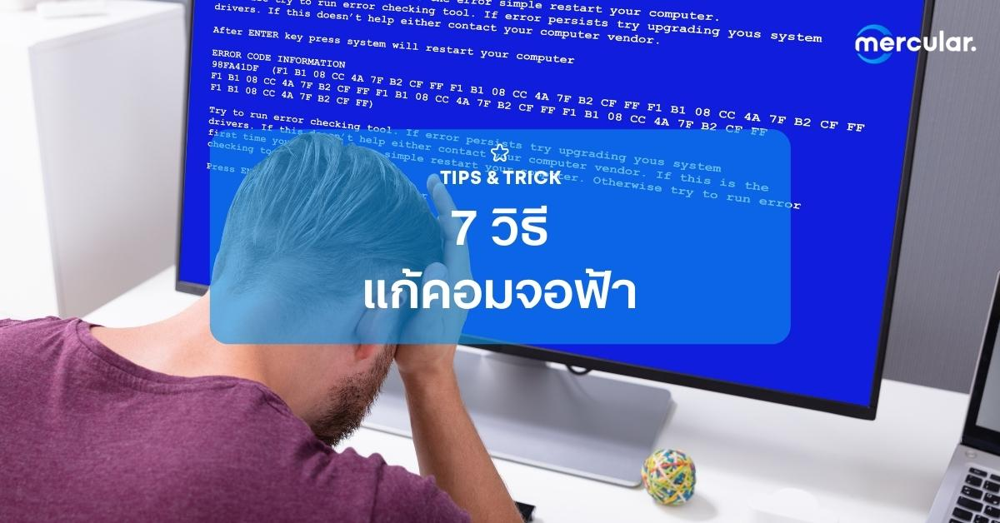
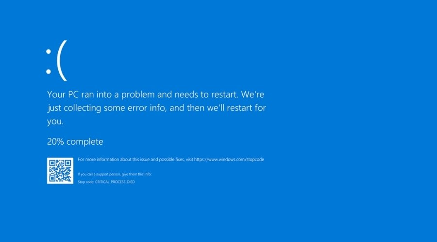

สำหรับผู้ใช้งานคอมพิวเตอร์และโน๊ตบุ้กนั้น ปัญหาอะไรก็ไม่น่าปวดหัวเท่ากับอาการจอฟ้า ที่อยู่ๆ ก็โผล่มาจากไหนไม่รู้จนหลายๆ คนรู้สึกหวาดระแวงว่าคอมพิวเตอร์ของเรามีอะไรแปลกไปแน่ๆ บางคนแทบไม่กล้าใช้คอมต่อ เพราะกลัวปัญหาลุกลาม แต่การที่คอมจอจอฟ้าใช่ว่าจะแก้ไขไม่ได้ซะทีเดียว เพราะวันนี้ทีมงาน Mercular.com จะมาแนะนำวิธีการแก้ปัญหาอาการคอมจอฟ้าแบบเบื้องต้น ที่ไม่ว่าคุณจะเก่งคอมหรือไม่ ก็จัดการปัญหานี้ได้อย่างสบาย
อาการคอมจอฟ้า คืออะไร
อาการจอฟ้า หรือที่เรียกกันว่าบลูสกรีน (Blue Screen) หรืออีกชื่อทางการที่โครตน่ากลัวอย่าง Blue Screen of Death (BSOD) นั้นเป็นหน้าจอแจ้งเตือนอาการผิดปกอย่างหนึ่งของคอมพิวเตอร์ ซึ่งอาการผิดปกเหล่านี้สามารถเกิดขึ้นได้จากปัญหาในฮาร์ดแวร์ของเครื่อง ไม่ว่าจะเป็นแรม, ฮาร์ดดิสก์ การ์ดจอ เป็นต้น หรืออาจเป็นเพราะซอฟแวร์ภายใน ไม่ว่าจะเป็นโปรแกรมต่างๆ ไวรัสคอมพิวเตอร์ หรือแม้แต่ตัวของ Windows เองก็เป็นต้นเหตุได้ ซึ่งโดยทั่วไปแล้วหลังจากคอมจอฟ้าไปแล้ว เราก็ยังสามารถใช้งานต่อได้อย่างปกติ หรือในบางเคสก็มีแบบที่ไปแล้วไปลับ ไม่กลับมาเปิดติดก็มีเหมือนกัน ทำให้บลูสกรีนนั้นเป็นอาการที่คนใช้คอมทั้งหลาย ไม่อยากให้เกิดกับคอมตัวเองสุดๆ

7 วิธีแก้คอมจอฟ้า
แม้หลายๆ คนจะรู้สึกว่าอาการจอฟ้าเป็นที่น่ากลัวและไม่อยากจะไปยุ่งเกี่ยวกับมันนัก แต่ที่จริงแล้วเราสามารถแก้ไขปัญหาจอฟ้าต่างๆได้ง่ายๆ ซึ่งเราได้รวบรวมวิธีแก้ปัญหาคอมจอฟ้าแบบง่ายๆ ถึง 7 วิธีด้วยกัน จะมีวิธีไหนบ้าง แล้วต้องทำยังไง เราไปดูกันเลย
1. ดูรหัส Stop Code ตอนคอมจอฟ้า รู้แล้ว แก้ง่ายเลย
วิธีการแรกถือว่าเป็นวิธีการมาตรฐานและได้ผลดีที่เลย เพราะทุกครั้งที่หน้าจอบลูสกรีนเด้งมานั้นจะมีการบอกโค้ดรหัส Stop Code ขึ้นมา ที่หน้าตาจะเป็น 0x00… อะไรประมาณนี้ ซึ่งเจ้ารหัสนี้แหละจะเป็นตัวที่บอกเราว่าอะไรทำให้คอมของเราขึ้นจอฟ้า เพราะงั้นถ้าเกิดว่าเราเจอหน้า Blue Screen อีกก็ควรตั้งสติให้ดี และจด Stop Code ไปเซิร์จดูว่ามันคืออะไร และต้องแก้ไขยังไงบ้าง เราจะได้แก้ได้อย่างถูกจุด
ส่วนข้างล่างนี้ก็เป็นตัวอย่าง Stop Code สุดฮิตที่หลายคนเคยกันมาบ้าง ได้แก่
- 0x0000002E : แสดงว่าระบบตรวจสอบหน่วยความจำทำงานผิดพลาด หรือไม่สำมารถเข้าถึงหน่วยความจำนั้น ซึ่งสาเหตุส่วนใหญ่นั้นเป็นฮาร์ดแวร์ที่เกี่ยวข้องนั้นเสียหาย อย่างเช่นฮาร์ดดิสก์, SSD, แรม หรือแม่แต่หน่วยความจำในการ์ดจอก็ทำให้เกิดจอฟ้าได้ ซึ่งวิธีแก้ไขที่คือการเปลี่ยนชิ้นส่วนที่เสียหายไป หรือไม่ก็ลองทำความสะอาดชิ้นส่วนต่างๆ ดูก่อน เพราะบางครั้งฝุ่นก็เป็นต้นเหตุให้คอมของเราหาฮาร์ดเหล่านี้ไม่เจอได้ด้วย
- 0x000000BE : โค้ดนี้มีสาเหตุมาจากการลงโปรแกรม, Driver หรือ Service ที่ผิดพลาด ทำให้ไม่สามารถทำงานได้ วิธีแก้ไขง่ายๆ คือการ Uninstall โปรแกรมล่าสุดที่เราเพิ่งลงไป แล้วค่อยใหม่ หรือไม่ก็เปลี่ยนไปใช้โปรแกรมหรือไดรเวอร์รุ่นก่อนหน้าแทน แต่ถ้าปัญหานั้นเกิดที่ตัว Service ก็ให้เข้าไปปิดโดยการเซิร์จในเครื่องว่า “Services” แล้วหาเซอร์วิสเจ้าปัญหาแล้ว Disable มันซะ
2. เช็คไดรเวอร์ในเครื่อง บางตัวอาจจะมีปัญหาที่ทำให้คอมจอฟ้า
อย่างที่บอกไปว่าบลูสกรีนสามารถเกขึ้นได้จากซอฟแวร์ภายในเครื่องของเรา และซอฟแวร์ที่มักจะเป็นปัญหาอยู่บ่อยครั้งก็คือเหล่าโปรแกรมไดรเวอร์ต่างๆ ที่ต้องทำงานร่วมกับฮาร์ดแวร์ชิ้นอื่นๆ ในคอมพิวเตอร์ของเรา ทำให้เวลาเปลี่ยนชิ้นส่วนบางอย่างหรือลงไดรเวอร์ใหม่ก็จะทำให้คอมจอฟ้านั่นเอง ซึ่งวิธีเช็คง่ายๆ ว่าไดรเวอร์ของเรามีปัญหาหรือไม่ ให้ลองเข้าไปที่ Device Manager ดู ถ้าเกิดว่าไดรเวอร์ตัวขึ้นสัญลักษณ์ ! อยู่ละก็ แสดงว่านั้นแหละคือต้นตอของปัญหาที่คุณเจอ ให้ลองลบลงใหม่ดู หรือเปลี่ยนไปใช้ไดรเวอร์เวอร์ชันอื่นๆ ดู
3. ลองสแกนมัลแวร์ หาตัวร้ายที่ทำให้คอมจอฟ้า
นอกจากไดรเวอร์ที่ทำให้เกิดปัญหาจอฟ้าแล้ว บรรดาของแถมตัวร้ายอย่างมัลแวร์ก็ทำให้เกิดบลูสกรีนได้อีกเช่นกัน เพราะโปรแกรมพวกนี้มักจะมีเป้าหมายเป็นระบบปฏิบัติการในคอมพิวเตอร์ของเรา ที่ส่งผลให้การทำงานของคอมพิวเตอร์มีปัญหานั้นเอง ซึ่งวิธีป้องกันหลักๆ นั้นก็คือการหมั่นสแกนไวรัสในเครื่องเป็นครั้งคราวบ้าง เพื่อให้มั่นใจว่าภายในคอมพิวเตอร์ของเรานั้นจะไม่มีซอฟแวร์ที่ทำอันตรายต่อเครื่องเรา แต่ทางที่ดี ก็อย่าไปหาลงโปรแกรมเถื่อน หรือเข้าเว็บแปลกๆ ที่มันไม่น่าใจบ่อยนักหล่ะ ไม่งั้นปัญหานี้ ก็ไม่จบสิ้นกันซักที
4. ซ่อมไฟล์ที่เสียหาย ด้วย SFC
นอกจากซอฟแวร์ต่างๆ ที่มักจะจะสร้างปัญหาให้กับเครื่องคอมพิวเตอร์ของเรา ระบบปฏิบัติการในเครื่องเราก็เป็นต้นเหตุให้คอมจอฟ้าได้เหมือนกัน ซึ่งส่วนหนึ่งก็เป็นเพราะการทำงานที่ผิดพลาดของไฟล์บางอย่างที่เป็นของ Windows ทำให้ OS ของเราไม่สามารถทำงานได้จนเกิดบลูสกรีนขึ้นนั่นเอง ซึ่งปัญหานี้ก็ไม่ได้วุ่นวายถึงขนาดลดวินโดว์ลงใหม่ เพียงแค่ใช้คำสั่ง System File Checker ก็สามารถแก้ปัญหาได้แล้ว ซึ่งวิธีใช้งานคำสั่งนี้ก็คือ
- ค้นหา Command Prompt (CMD) ในช่องเซิร์จ แล้วเปิดแบบ Run as Administrator
- พิมพ์คำสั่ง sfc /scannow แล้วกด Enter เพื่อเรื่มคำสั่ง
- ปล่อยให้คำสั่งทำงานจนถึง 100% เท่านี้ก็เรียบร้อยแล้ว
5. ย้อนเวลากลับไปก่อนคอมจอฟ้า ด้วย System Restore
เป็นอีกหนึ่งวิธีที่คนชอบ Backup จะใช้กัน เพราะ Blue Screen นั้นมักจะเป็นทันทีหลังจากเกิดปัญหา ซึ่งไม่ว่าจะเป็นเพราะเราลงโปรแกรมแปลกๆ หรือตั้งค่ามั่วๆ เราก็สามารถย้อนเวลาคอมพิวเตอร์กลับไปในช่วงเวลาก่อนหน้าได้ด้วย System Restore โดยมีวิธีการดังนี้
- เปิดหน้าต่าง Recovery จากช่องค้นหาหรือ Control Panel
- กดที่ Open System Restore แล้วหน้าต่างของ System Restore จะเด้งขึ้นมา ให้กด Next
- จากนั้นโปรแกรมจะเลือกช่วงเวลาที่คุณอยากให้คอมพิวเตอร์ของคุณย้อนกลับไป เมื่อเลือกแล้วให้กด Next เพื่อทำการย้อนเวลา
ซึ่งถ้าคุณโชคดี ระบบอาจจะเก็บช่วงเวลาก่อนเกิดเรื่องไว้ให้อัตโนมัติ แต่ทางที่ดีเราควรจะสร้างจุด System Restore ของตัวเองไว้จะดีกว่า เผื่อคราวหน้าไปทำให้แปลก แล้วจะได้แก้ไขได้
6. เช็คฮาร์ดแวร์ให้ดี ว่าไม่มีอะไรผิดแปลก
อย่างที่บอกว่าไม่เพียงแต่ชอฟแวร์ในเครื่องที่ทำให้เกิด Blue Screen แต่ชิ้นส่วนคอมประกอบต่างๆ ในเครื่องของเราก็เป็นเหตุให้เกิดจอฟ้าได้เช่นกัน ไม่ว่าจะเป็นแรม, การ์ดจอ, ซีพียูู หรือแม่แต่ตัวเมนบอร์ดเองก็มีสิทธ์ทำให้คอมจอฟ้าได้ ดังนั้น เราจึงควรหมั่นเช็คภายในคอมพิวเตอร์ของเราว่ายังเป็นปกติ ทำงานได้ดีอยู่หรือไม่ โดยสาเหตุส่วนใหม่ที่เกี่ยวข้องกับฮาร์ดแวร์ก็คือ การเสียบอุปกรณ์ไม่แน่นพอ สายไฟหลวมหรือหลุด ปัญหาฝุ่นและความสกปรกในเครื่อง จนไปถึงชิ้นส่วนบางอย่างที่พังโดยที่เราไม่รู้ตัว เพราะฉะนั้น การหมั่นเช็คสภาพคอมพิวเตอร์ ก็สำคัญไม่แพ้กันเลย
7. แก้คอมจอฟ้ายังไงก็ไม่หาย? ลง Windows ใหม่ไปเลย
นี่ถือเป็นวิธีการแก้ปัญหาแบบท่าไม้ตายสำหรับใครหลายๆ คน ในเมื่อแก้เกมไม่ได้ก็จัดการล้างกระดานใหม่ซะเลย ซึ่งวิธีนี้เหมาะสำหรับคนทำไม่ได้มีข้อมูลอะไรสำคัญในคอมพิวเตอร์มากนัก เพราะเราจะต้องลงแบบ Clean Installation ที่ต้างล้างไดรฟ์เก่าออกเสียก่อน แต่ขอบอกว่าวิธีนี้แก้ได้เฉพาะบลูสกรีนที่เกิดเพราะซอฟแวร์เท่านั้น ถ้าเกิดต้นตอนั้นเกิดที่ฮาร์ดแวร์หล่ะก็ เตรียมปวดหัวต่อได้เลย
|